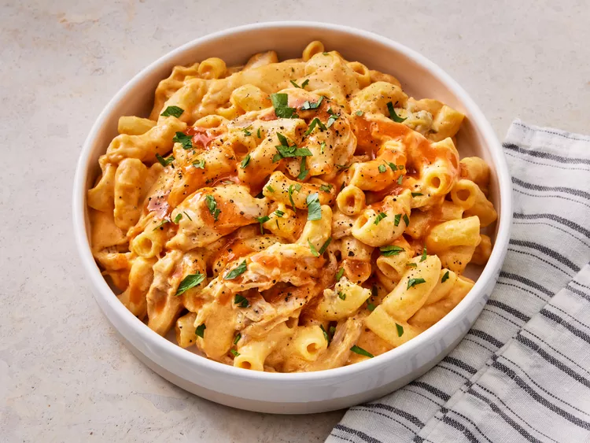

Buffalo Mac and Cheese

Description
Buffalo Chicken Mac and Cheese blends tender macaroni, shredded rotisserie chicken, and a creamy cheese sauce with the bold kick of buffalo sauce. Topped with crumbled gorgonzola, this dish balances spicy heat with smooth, cheesy comfort. Perfect for game day or a cozy meal, it's easy to prepare and customize to your preferred spice level.
Ingredients
- 1 (16-ounce) package elbow macaroni
- 1 rotisserie-roasted chicken
- 6 tablespoons butter
- 6 tablespoons all-purpose flour
- 3 cups milk
- 1 pinch ground black pepper
- 2 cups shredded Cheddar cheese
- 2 cups shredded Monterey Jack cheese
- ½ cup hot sauce (such as Frank's® Redhot®), or more to taste
- ½ cup crumbled gorgonzola cheese
Directions
- Bring a large pot of lightly salted water to a boil. Cook the elbow macaroni in the boiling water, stirring occasionally until tender yet firm to the bite, about 8 minutes. Drain and set aside.
- Remove the wings and legs from the rotisserie chicken, discarding the skin and bones. Chop or shred the dark meat into bite-sized pieces.
- In a large Dutch oven, melt the butter over medium heat. Gradually whisk in the flour until a thick paste forms, cooking until golden, about 1 minute.
- Pour in the milk, whisking constantly until thickened and bubbling, about 5 minutes. Continue to cook and stir until the sauce is smooth, about 1 minute more. Reduce heat and season with black pepper.
- Stir in the shredded Cheddar and Monterey Jack cheeses until melted and well combined.
- Add the hot sauce to the cheese sauce, adjusting the amount to your desired level of spiciness.
- Stir in the gorgonzola cheese, chicken, and cooked macaroni, mixing well to combine.
- Serve hot and enjoy!